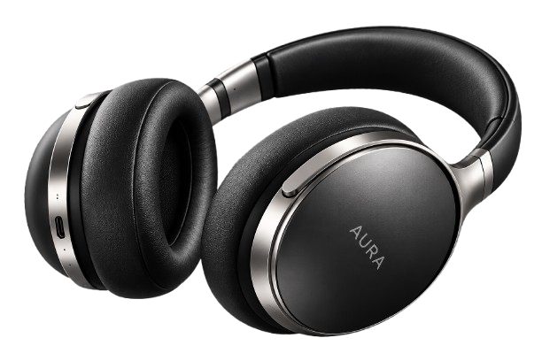

O NAS
Nie tworzymy tylko
słuchawek.
Tworzymy emocje.
Wierzymy, że muzyka to coś więcej niż dźwięk.
To wspomnienia, emocje i chwile, które zostają
z nami na zawsze. Dlatego stworzyliśmy AURA — markę,
która łączy pasję do muzyki z nowoczesną technologią
i ponadczasowym designem.

NASZA HISTORIA
Wszystko zaczęło się od pasji.
AURA narodziła się z prostego pomysłu — stworzyć
słuchawki, które nie tylko doskonale brzmią, ale
również inspirują swoim wyglądem i wygodą.
Od pierwszych projektów przyświecał nam jeden cel:
połączyć wyjątkową jakość dźwięku, inteligentne rozwiązania
i minimalistyczny design w jednym produkcie.
Tak powstały AURA ONE — słuchawki stworzone dla tych,
którzy oczekują od muzyki czegoś więcej.
2024
Pierwszy pomysł
Zaczynamy pracę nad
wizją słuchawek.
2025
Pierwsze prototypy
Testujemy słuchamy
doskonalimy
2026
Premiera AURA ONE
Łączymy technologię
z emocjami.
Dziś
Społeczność AURA
Tysiące użytkowników
na całym świecie

NASZE WARTOŚCI
To, co nas wyróżnia.
Każdy detal ma znaczenie. Dlatego kierujemy się wartościami,
które są fundamentem wszystkiego, co tworzymy.
Pasja do dźwięku
Muzyka inspiruje nas każdego
dnia do tworzenia czegoś
wyjątkowego
Design bez kompromisów
Łączymy estetykę, wygodę
i najwyższą jakość wykonania.
.png)
Innowacyjna technologia
Nieustannie rozwijamy nasze
rozwiązania, aby być o krok
przed oczekiwaniami.
Ludzie i społeczność
Tworzymy dla tych, którzy
kochają muzykę tak jak my.